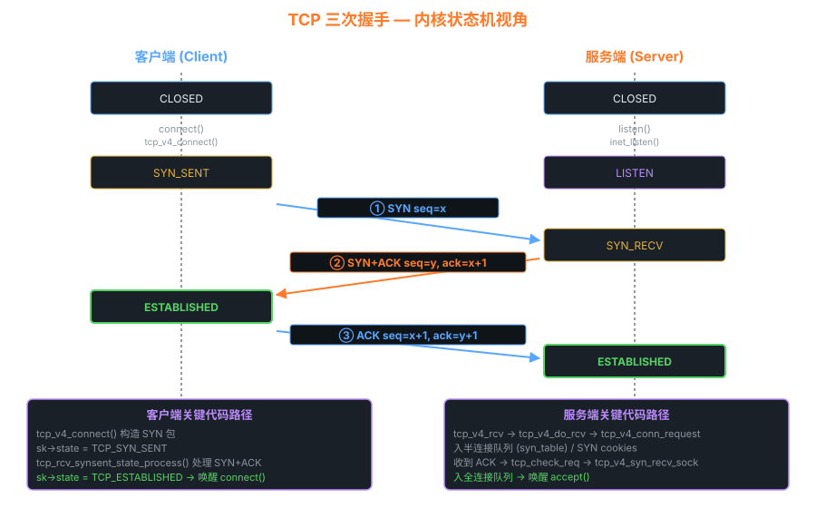

08网络子系统 — sk_buff、TCP 状态机、XDP
网络栈是 Linux 内核最复杂的子系统，但只要抓住三条主线就能驾驭：sk_buff (数据载体) · TCP 状态机 (协议) · netfilter (扩展点)。
8.1 sk_buff — 一切数据包的载体
为什么 sk_buff 这样设计？
包从网卡上来时，最外层是以太网帧。每经过一层（链路 → IP → TCP），就要"剥掉"一个头。
若每层都拷贝一份数据 = 灾难。sk_buff 通过移动 data 指针实现"零拷贝剥头"，
skb_pull 让 data 前移（剥头），skb_push 让 data 后移（加头，发送时）。
8.2 收包路径
/* 1. 网卡硬中断 → 入 backlog 或 NAPI */ ISR (drivers/net/.../xxx.c): napi_schedule(&napi); // 触发 NET_RX_SOFTIRQ /* 2. 软中断 net_rx_action() 调 NAPI poll */ xxx_poll(napi, budget): while (有包 && budget--) { skb = napi_alloc_skb(...); // DMA 已把数据放在 skb->data netif_receive_skb(skb); } /* 3. 通用 RX 入口 — 协议分发 */ __netif_receive_skb_core(skb): // 调用 XDP / tcpdump / vlan / netfilter ingress 等 pt = ptype_base[ntohs(skb->protocol)]; pt->func(skb, ...); // → ip_rcv / arp_rcv / ... /* 4. IP 层 */ ip_rcv → ip_rcv_finish → ip_local_deliver → ip_local_deliver_finish: ipprot = inet_protos[ip_hdr->protocol]; ipprot->handler(skb); // → tcp_v4_rcv / udp_rcv / icmp_rcv /* 5. TCP 层 */ tcp_v4_rcv: sk = __inet_lookup_skb(...); // 找到 socket tcp_v4_do_rcv(sk, skb); if (sk->state == TCP_ESTABLISHED) tcp_rcv_established(...) // → 入 sk->sk_receive_queue else tcp_rcv_state_process(...) // 处理握手/挥手 /* 6. 用户态 read() 系统调用从 sk_receive_queue 取数据 */
8.3 TCP 三次握手 — 内核视角

客户端 / 服务端 状态机变化与对应内核代码路径
半连接队列 vs 全连接队列
| 队列 | 状态 | 大小调节 | 溢出后果 |
|---|---|---|---|
| 半连接 (syns_q) | SYN_RECV | tcp_max_syn_backlog | 丢 SYN (SYN flood) |
| 全连接 (accept_q) | ESTABLISHED 待 accept | listen() 的 backlog | 丢 ACK，客户端重传 |
# 查看全连接队列溢出
ss -lnt | head
nstat -az TcpExtListenOverflows
nstat -az TcpExtListenDrops
8.4 netfilter — iptables 的内核基座
8.5 XDP — 极致性能的包处理
XDP (eXpress Data Path) 在网卡驱动收包的最早期执行 eBPF 程序，性能远超 iptables：
| 层级 | 每核 PPS (大致) | 典型用途 |
|---|---|---|
| 用户态 (DPDK 除外) | ~1M | 普通应用 |
| iptables | ~5M | 防火墙 |
| tc-bpf | ~10M | 流量控制 |
| XDP | 20~50M+ | DDoS 缓解、L4 负载均衡 (Katran) |
/* xdp_drop_bad.bpf.c */ SEC("xdp") int xdp_drop_bad(struct xdp_md *ctx) { void *data = (void *)(long)ctx->data; void *data_end = (void *)(long)ctx->data_end; struct ethhdr *eth = data; if ((void*)(eth+1) > data_end) return XDP_PASS; if (eth->h_proto == bpf_htons(ETH_P_IP)) { struct iphdr *ip = (void*)(eth+1); if ((void*)(ip+1) > data_end) return XDP_PASS; if (ip->protocol == IPPROTO_ICMP) return XDP_DROP; // 丢所有 ICMP } return XDP_PASS; }